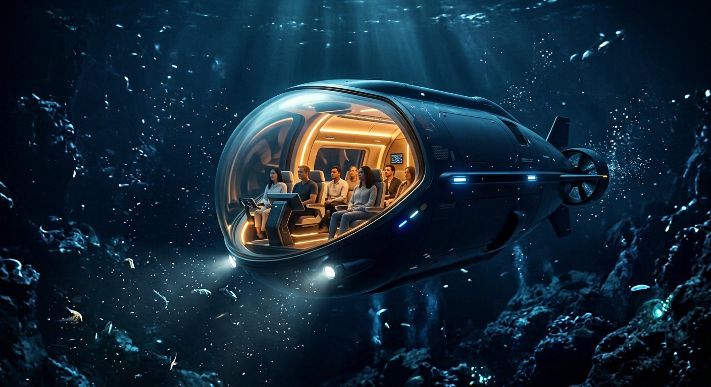

نورسپیده
۰ تا ۲۰۰ مترخانهی مرجانها و ماهیها؛ جایی که نور هنوز مهمانِ آب است.
با شناورهای اکتشافیِ «اعماق» از نورِ خورشید تا سکوتِ گودالها سفر کنید — جایی که تا امروز کمتر از هزار نفر آن را دیدهاند.
سفر بعدی: پاییز 1405هر سفر از نورِ خورشید شروع میشود و در سکوتِ مطلقِ گودالها تمام میشود.
خانهی مرجانها و ماهیها؛ جایی که نور هنوز مهمانِ آب است.
نور میرود و موجوداتِ نورساز جانشینش میشوند.
تاریکیِ ابدی، فشارِ وحشتناک — و زندگیِ غافلگیرکننده.
دشتهای گدازهای و چشمههای گرم؛ مرزِ آخرِ کاوش.

شناورِ پنجنفرهی ما برای سفرِ گردشگری طراحی شده است؛ نه برای نظامیها، نه برای دانشمندان — برای شما.